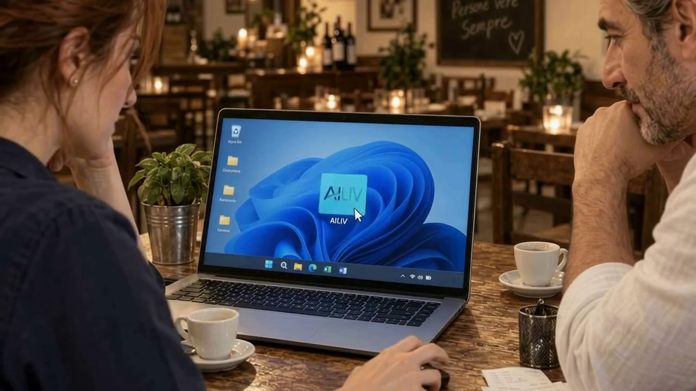

SISTEMI SU MISURA PER LE PMI
La tua azienda,
finalmente
collegata.
Colleghiamo i tuoi dati e automatizziamo i processi. Vendite, costi, marketing e persone diventano un unico contesto da interrogare, analizzare e usare per decidere.
E tutto il resto dell’azienda.
Il ristorante è la loro storia. Il sistema si cuce sulla tua.
Sui programmi che usi già. Progetto su preventivo.
Vedi cosa cambia nel lavoro di ogni giorno01 / DOPO UNA GIORNATA PIENA
L’azienda va.
Ma a quale prezzo?
Gli strumenti ci sono. I dati anche. Ma a tenerli insieme sei ancora tu, spesso quando la giornata dovrebbe essere finita.

Un file per gli incassi. Un gestionale per i costi. Un altro per il marketing. Il collegamento lo fanno ancora loro.
Quale di questi passaggi ti porta via tempo?
Vediamo cosa puoi automatizzareI TUOI STRUMENTI. UN NUOVO COLLEGAMENTO.
Dentro i tuoi strumenti
c’è molto di più.
La storia lo immagina così. Subito sotto, puoi vedere cosa cambia nel lavoro reale.

Premi il pulsante, oppure tocca il logo sullo schermo.
DAL FILM ALLA TUA AZIENDA
Gli stessi strumenti.
Tutta un’altra visione.
Approfondisci un reparto o incrocia i dati di tutta l’azienda. Ogni analisi parte dallo stesso contesto.
Esporti, ricopi, cerchi il file giusto.
E ricostruisci il contesto ogni volta.
Guarda lo stesso lavoro, con i collegamenti attivi.
Dimostrazione illustrativa. Fonti, automazioni e approvazioni vengono definite sul tuo lavoro reale.
Quali collegamenti servirebbero alla tua azienda?
Valutiamoli insiemeLE AUTOMAZIONI FANNO PARTE DEL SISTEMA
Meno passaggi a mano.
Il lavoro prosegue.
Costruiamo le automazioni che servono alla tua azienda. Partono dagli eventi o dalle scadenze concordate e svolgono le attività ripetitive.
Guarda un’automazione in azione- ↗Arrivano i dati. Si aggiorna il report.
Importazioni, classificazione e riepiloghi periodici.
- ◎Finisce la campagna. Si raccolgono i risultati.
Marketing, vendite e costi entrano nello stesso confronto.
- ✓Manca un passaggio. Parte la segnalazione.
Controlli, promemoria e procedure che restano disponibili.
SU MISURA, DAL PRIMO COLLEGAMENTO
La tua azienda
ha già il suo modo.
Lo conosciamo, individuiamo i passaggi da automatizzare e costruiamo il sistema intorno alle persone e ai programmi che usate.
Come lo costruiamo insiemeGuardiamo il lavoro reale.
Strumenti, dati, passaggi e persone.
Facciamo funzionare il primo pezzo.
Un perimetro chiaro, con verifiche concrete.
Colleghiamo il resto.
Nuovi reparti, manutenzione e continuità.
FUORI DAL FILM
I collegamenti
li costruiamo davvero.
Dalle fatture alle voci di costo.
↗02 / OPERATIVITÀDai turni alle capacità di consegna.
↗03 / MARKETINGDallo storico clienti alle campagne.
↗Ogni progetto parte da un passaggio concreto.
Parliamo della tua azienda
IL VERO SUPERPOTERE
Avere il controllo.
E una serata libera.
Dati che si collegano. Processi che lavorano.
Un’azienda che puoi leggere nel suo insieme.
PARTIAMO DALLA TUA AZIENDA
Il primo collegamento
lo facciamo insieme.
Quali programmi usi? Quale passaggio ti porta via tempo? Nel check-up capiamo da dove iniziare.
Ne parli con Andrea Rubei,
fondatore di AILIV.
Preferisci scriverci? info@ailiv.it ↗
PRIMA DI PARTIRE
Le domande
più concrete.
È solo per i ristoranti?
Il ristorante è l’esempio del film. Lavoriamo sui processi delle PMI: ristorazione, commercio, servizi e produzione. Il progetto parte dalla tua attività.
Devo cambiare i miei programmi?
Partiamo da quelli che usi. Nel check-up verifichiamo accessi, esportazioni e qualità dei dati per capire cosa si può collegare.
Il sistema fa tutto da solo?
Le automazioni eseguono passaggi definiti. L’AI aiuta ad analizzare le informazioni e preparare proposte. Eccezioni, approvazioni e responsabilità vengono concordate nel progetto.
Quanto costa?
Il check-up iniziale è gratuito. Progetto e manutenzione sono su preventivo, in base ai collegamenti e alle automazioni da costruire.